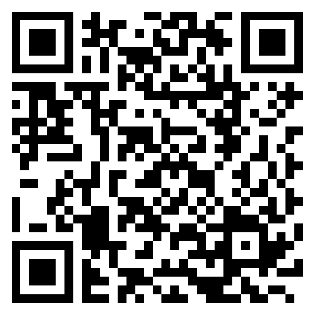

Klinik Pergigian Dato Keramat / ECC briefing
Choose the version to use
Mobile-friendly landing for the ECC materials. Scan the QR code or open this page on the clinic PC, then choose the source PDF, the presentation deck, or the faithful/enhanced option deck.

Presentation Options
Three safe options so Dr. can choose the version that fits the room and device.
Source CPG PDF
Closest to the original material. Use when she wants to verify wording or keep the content strictly source-first.
Download source PDF ↓ Presentation deckPG Pengurusan Karies Kanak-Kanak Awal
The uploaded presentation option from Downloads. Best for direct use on an Office PC.
Download presentation ↓ Choice deckKP Dato Keramat Faithful + Enhanced
Includes source-faithful material and enhanced alternatives at the end so she can swap only what she prefers.
Download options deck ↓Teaching Tools
Optional HTML tools for explaining ECC visually or reusing slide-design components.
ECC Tooth Lab
Simple presenter prop: rotate one tooth, focus surfaces, and step through plaque, white spot, brown spot and cavitation.
Advanced HTMLECC Tooth Lab + Mouth Map
Advanced version with the same tooth model plus an odontogram-style upper primary anterior map for selecting 51, 52, 61 and 62.
PrototypePresentation Design Studio
Reusable slide canvas lab with configurable adapters and pure rendering functions.